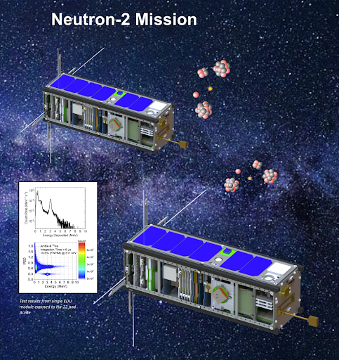

01
Radiation science
Measure low-energy Earth albedo neutrons and gamma rays across changing orbital conditions.
Mission 002 / Low Earth Orbit
Two CubeSats mapping neutron and gamma-ray flux in Low Earth Orbit— advancing space weather science and radiation safety.

02 / Platform
01
Measure low-energy Earth albedo neutrons and gamma rays across changing orbital conditions.
02
Two copies on slightly different altitudes reveal spatial and temporal dynamics.
03
F-Prime flight software, ISISpace COTS bus hardware, and a SATNOGS-based radio.
03 / Mission timeline
July 2026 — Ongoing
January 2027
Future
NEUTRON—2 / 2026